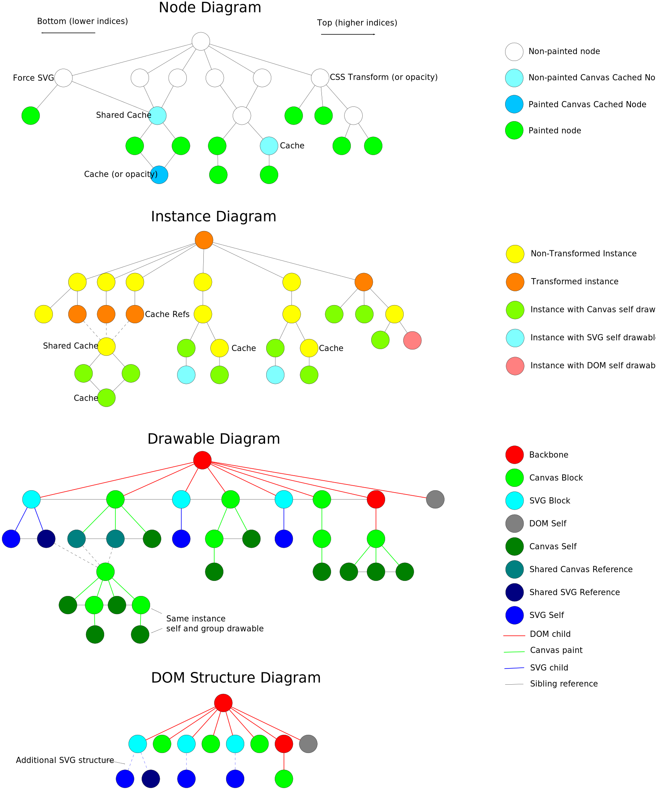
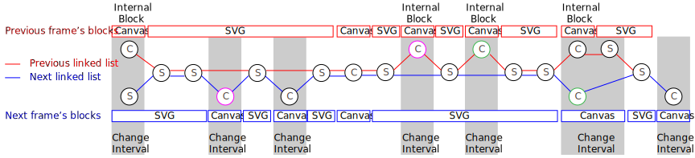
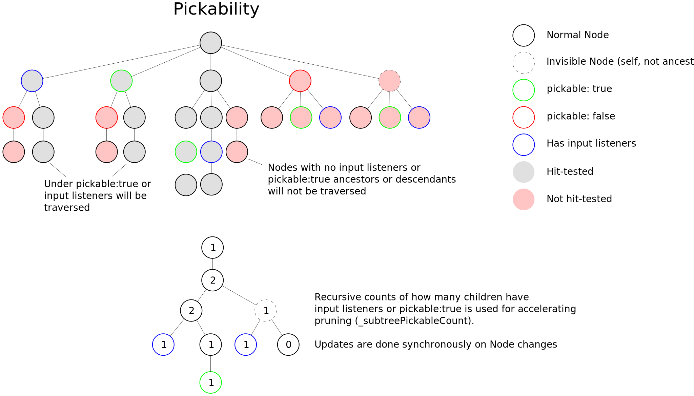

NOTE: Currently a rough draft and collection of notes!
Scenery's nodes can form a DAG (directed acyclic graph) in any manner. A Display is attached to a single root Node, and only displays the sub-graph rooted at that node. Since a node and its sub-graph can be shown in multiple places in the same display (and Scenery usually needs to treat them separately), we internally create an Instance tree, where an Instance refers to a particular copy of a node, with a specific path (sequence of Nodes) from the root to the node. This sequence of nodes is referred to as a Trail. The Instance tree is conceptually constructed from a depth-first traversal of the node sub-graph, which essentially duplicates sub-graphs from nodes with multiple parents.
There is one exception for Instance trees: there are cases where we want to duplicate a very commonly used Node, but we render it to an intermediate shared raster (Canvas/WebGL cache), and we don't want its children have the overhead of having many Instances. In this case, we'll have placeholder Instances for everywhere we'll want to show the raster, all pointing to another Instance tree responsible for rendering into the raster. These are known as shared caches, which are separate from Instance caches, which have a separate raster for every Instance.
Drawables are objects that can be displayed with a specific renderer. For example, a Rectangle can be displayed with a SVG-specific drawable. All drawables for a specific renderer (Canvas, WebGL, SVG, or DOM currently) conform to renderer-specific APIs (for instance, SVG drawables must have an svgElement property holding the actual SVG element, among other things).
A node is called Painted if it displays something itself (like Path, Image, Text, etc.). A vanilla Node is not considered painted, since it doesn't display anything itself (even though its children/descendants may). Painted nodes will always have Instances that have self drawables that are responsible for rendering that node (not including any children).
Some Instances will also have a group drawable that is responsible for combining the drawables of its descendant Instances and if available its self drawable.
Drawables keep a reference to their parent and children (if applicable), creating an implicit drawable tree. This tree can be traversed in depth-first order to repaint any changed drawables before repainting their parents.
A Block is a DOM-compatible drawable that is responsible for displaying a list of drawables with the same renderer (e.g. SVGBlock is responsible for displaying a bunch of SVG drawables and providing the <svg> element to be put in the DOM). Drawables can be added, removed, or rearranged inside of a block.
Many types of blocks are fitted, indicating that the area they take up on the screen can be reduced to approximately "fit" the content (which can reduce browser memory usage and increase performance).
A backbone is a type of DOM drawable that contains blocks as children. It is responsible for taking a list of drawables with (usually) differing renderers, splitting it into chunks that each have drawables with the same renderer, and managing blocks to handle each chunk. In the DOM, a backbone is a <div> that contains the DOM elements of its blocks as children.
Certain types of Instances will contain a backbone as their group drawable. The root Instance will always have a backbone, known as the root backbone. The Display's domElement is the root backbone's DOM element.
Below shows the transformation of an example node DAG into Instance trees, the drawable tree, and final DOM structure. In the example, the CSS transform hint results in the creation of a backbone (a div to transform), and both Instance and shared caches are shown ("cache" denoting the Instance caches).

Scenery (since 0.2) is designed to generally batch all changes to the DOM until Display's updateDisplay() is called (where all visual operations are done). Input events are generally not batched (but executed synchronously), allowing writing security-sensitive event handlers directly in up-events.
{Renderer} indicates a specific integer bitmask that includes a flag for DOM/SVG/Canvas/WebGL, and other
optional flags. Use strict equality for comparison, or Renderer.isDOM( renderer ) and equivalents.
The task of updating blocks in a backbone for a new list of drawables is known as stitching. The back-propagation of syncTree() creates a list of {ChangeInterval}s that each conceptually contain a list of removed nodes and a list of added nodes (which are swapped in the list of drawables). Stitching needs to efficiently make changes at each ChangeInterval, inserting, removing and rearranging blocks to minimize the overall cost. See Stitcher.js for in-depth documentation on the constrains and process.

Node visibility is tracked by Instances. Every frame in the pre-repaint phase (after syncTree/stitching but before SVG updates and Canvas/WebGL repaints) the visibility flags (visible, relativeVisible, selfVisible) are updated for every Instance (lazily, so if a subtree doesn't need updates, it won't be updated). Drawable has a visibility flag for the drawable tree (if false, it and its sub-tree won't be drawn). SelfDrawable takes care of updating the visibility based on the Instance's selfVisibility.
Drawables with the DOM renderer need to handle their own visibility (DOMSelfDrawable takes care of it with instance.selfVisible). Drawables with the SVG renderer don't have to handle visibility, each SVGGroup takes care of it. Canvas/WebGL rely on the instance/drawable visibility flags for whether to render in each pass.
The excludeInvisible flag is provided to prevent drawables from an invisible subtree being included in its parent's drawable list. Thus if excludeInvisible === true AND the node itself for that is invisible, its drawables will NOT be included in the backbone or any blocks. If excludeInvisible === false then the drawables will be included, and the above methods for handling visibility for each renderer type will be used instead.
Color-coding of object lifecycles: Instance, Drawable
Below is a worked example showing how the pickable flag, input listeners and visibility affect hit-testing, and also how _subtreePickableCount is used to efficiently maintain information on whether a pickable:true flag or input listener is in a visible descendant.
